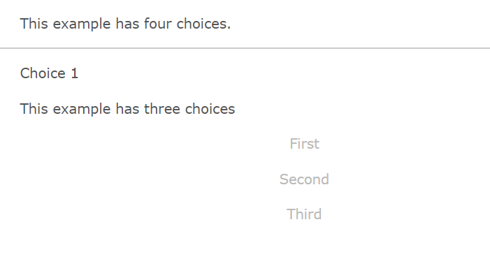
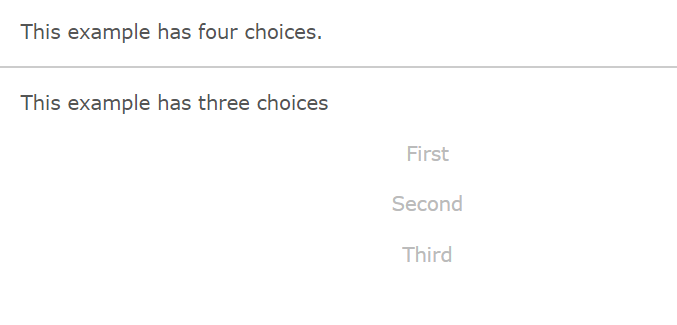
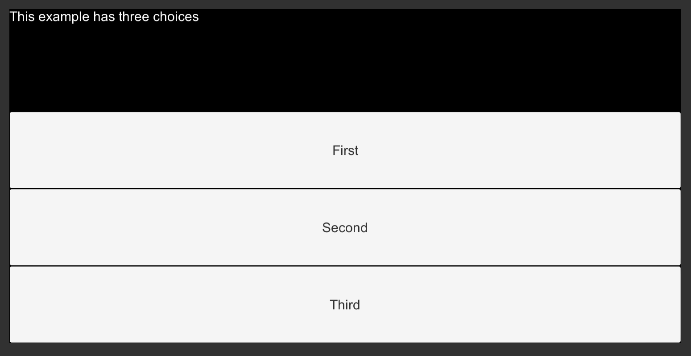
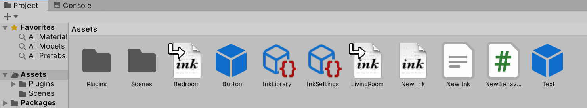
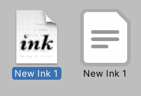
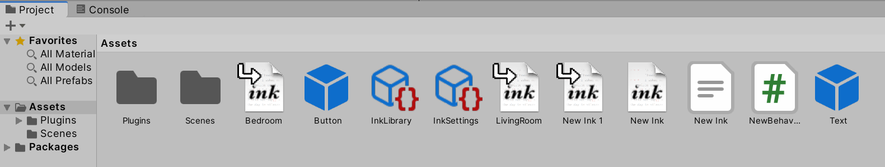

Chapter 13: Ink: Selective Output and Story Organization
Objectives
- Apply selective output syntax using square brackets in Ink
- Implement the INCLUDE keyword to organize multi-file Ink projects
- Analyze the difference between choice text display and story continuation
- Utilize bracketed choice text to control narrative flow
- Organize large Ink stories across multiple files
Table of Contents
Selective Output
In all previous Ink story examples in this book, choices appeared like the following:
This example has four choices.
* Choice 1
* Choice 2
* Choice 3
* Choice 4
When run, the Scene would show the text “This example has four choices.” and then that of the choices. When one of the options was chosen, it would then appear as part of the next chunk of the story.

As running the code in Inky shows, this is the default behavior for choices. Once chosen, its text is carried over into the next story chunk.
In Ink, this behavior can be changed through special syntax called selective output. When any part, including the whole text, of a choice is enclosed in opening, [, and closing, ], brackets, it becomes selective output. That is, it is not used as part of the next story chunk.
This example has four choices.
* [Choice 1]
* [Choice 2]
* [Choice 3]
* [Choice 4]
-

Shown when run in Inky, no text of the choices is carried over.

When run in Unity, this shows the same effect. Through using selective output (putting opening and closing square brackets around the text), the text of the choice is not passed to the next story chunk.
Story Organization
Ink uses the INCLUDE keyword to pull the contents of other files into a central one. This helps when organizing projects through dividing up files as parts of areas, regions, characters, or other logical divisions.
Note: As of 2025, the INCLUDE system remains the standard way to organize Ink projects. This pattern is still widely used and recommended for maintaining large, complex narratives.
For example, if a project had two areas that were self-contained in files matching their names, it might look like the following:
INCLUDE Bedroom.ink
INCLUDE LivingRoom.ink
You stand at the doorway and consider the two rooms in front of you.
In the above code, the file Bedroom.ink would contain Ink code for that area and LivingRoom.ink would be the same for its area.
The first two lines pull in the code from those files and make it available in a central file. (Any of their knots or stitches can be accessed because they are part of one large file when compiled together.)
New Ink.ink:
INCLUDE Bedroom.ink
INCLUDE LivingRoom.ink
You stand at the doorway and consider the two rooms in front of you.
-> Rooms
=== Rooms ===
+ [Bedroom]
-> Bedroom ->
+ [Living Room]
-> LivingRoom ->
-
-> Rooms
Although not covered in-depth in this book, tunnels, a concept in Ink where a target is diverted to and then control reverts back to the original location, can often be useful for exploring a location and then returning to a central point.
Through creating tunnels and then returning, the two locations (across two files) can be “explored” as the story branches to the knots and then back again, repeating the search options through sticky choices.
Note: In Ink, a choice can be made “sticky” through using a plus sign,
+, instead of the normal asterisk,*. If the spot in the story where the choice was chosen is returned to, it will remain an option for a player to pick again. This pattern remains current in 2025 and is widely used for menu systems and explorable locations.
Bedroom.ink:
=== Bedroom ===
You notice a rather messy room with clothes on the floor and even, you notice, on a window.
+ [Go back to doorway?]
->->
LivingRoom.ink:
=== LivingRoom ===
There's a TV and some shelves. Looks like the books have been arranged by color rather than by title. It creates a nice rainbow effect across the books.
+ [Go back to doorway?]
->->
When the INCLUDE keyword is used to pull in the contents of another in an Ink file, its icon changes in the Project window in Unity.

File gain a ‘return’ symbol marking that its contents are being used in another file. In this case, both Bedroom.ink and LivingRoom.ink are INCLUDE‘d in the New Ink.ink file.
This is important as, normally, the Ink Unity Integration plugin will automatically detect and re-compile an Ink script file.

For example, adding a new file New Ink 1.ink automatically generates the JSON file New Ink 1.json in the Project window.
If the file is then INCLUDE‘d in another file, its JSON file will be removed.
INCLUDE Bedroom.ink
INCLUDE LivingRoom.ink
INCLUDE New Ink 1.ink
You stand at the doorway and consider the two rooms in front of you.
For example, adding the line INCLUDE New Ink 1.ink would change both the icon and status of the associated JSON file.

If a file is INCLUDE‘d in another, the Ink Unity Integration plugin is smart enough to know to remove the previous JSON file, cleaning up the Project window.
However, if multiple JSON files appear matching the name of other Ink files, this is a clear indication that those files are being compiled separately. In which, the existing Ink files should be consulted to find where the missing INCLUDE might be needed.